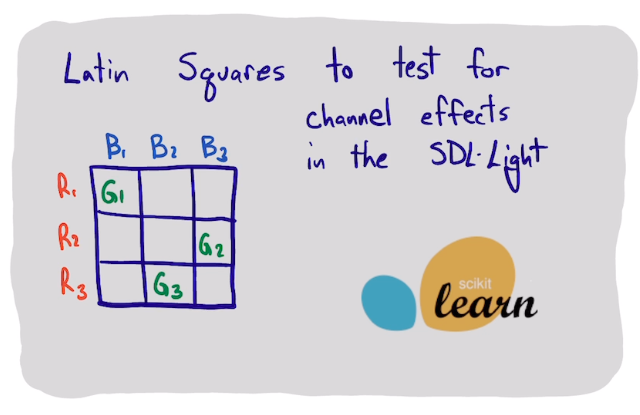

A Latin Hypercube experimental design to estimate effects in the SDL-Light
Table of Contents

1. An example
We are testing the effects of an additive on car performance. We have 4 additives to test. We are worried however, that the effect may vary by the car (e.g. different kinds of cars) and driver (e.g. from different driving habits). A Latin Square design of experiments allows us to estimate the significance of these factors with a minimum of experiments. At 4 cars, 4 drivers, and 4 additives, we would have to do 64 experiments to try all the combinations.
In a Latin square design we will only do 16 experiments. These experiments are "blocked" so we can separate the effects from each factor. Then we consider this simple model:
result = average + effect1 + effect2 + effect3 + residuals
We can compute the variance for each of these and compare that to the variance of the residuals. If the variance of an effect is much larger than that of the residuals, it is an important factor.
Here we introduce pycse.sklearn.lhc for this kind of work.
This is a simple setup.
from pycse.sklearn.lhc import LatinSquare
ls = LatinSquare({'car': [1, 2, 3, 4],
'driver': ['I', 'II', 'III', 'IV'],
'additive': ['A', 'B', 'C', 'D']})
In the next example we will get the design from the class. This data and design is from
- Box, G., Hunter, J., & Hunter, W. (1978). Statistics for experimenters: an introduction to design, data analysis, and model building.
It is a named table in org-mode.
| car | driver | additive | result | |
|---|---|---|---|---|
| 0 | 1 | I | A | 21 |
| 1 | 1 | II | D | 23 |
| 2 | 1 | III | B | 15 |
| 3 | 1 | IV | C | 17 |
| 4 | 2 | I | B | 26 |
| 5 | 2 | II | C | 26 |
| 6 | 2 | III | D | 13 |
| 7 | 2 | IV | A | 15 |
| 8 | 3 | I | D | 20 |
| 9 | 3 | II | A | 20 |
| 10 | 3 | III | C | 16 |
| 11 | 3 | IV | B | 20 |
| 12 | 4 | I | C | 25 |
| 13 | 4 | II | B | 27 |
| 14 | 4 | III | A | 16 |
| 15 | 4 | IV | D | 20 |
Here I use the named table to make a Dataframe in Python. The use of :colnames no is unintuitive, but it means to include the column names in the table. org-mode by default does not include those, but we want them as column names.
import pandas as pd df = pd.DataFrame(data) df.columns = df.iloc[0] df = df.drop(columns='') df = df[1:] df
Next we fit the data.
ls.fit(df[['car', 'driver', 'additive']], df['result'])
And do the analysis of variance.
ls.anova()
This means the biggest effect on the results is due to the drivers.
ls.effects['driver']
It is not that easy to say which additive is best. B appears to have the most positive effect, but more data is needed in more controlled conditions to be sure.
ls.effects['additive']
2. SDL-Light example
Here we use the SDL-Light instrument and try to determine if the R, G, B variables have an effect on each channel that we measure. We previously explored this in ./averages.html#org00646ae.
We set this up as a three factor Latin square, with three levels for each factor.
ls = LatinSquare({'R': [25, 50, 75],
'G': [25, 50, 75],
'B': [25, 50, 75]})
df = ls.design(shuffle=True)
df
We can see a more conventional matrix with a pivot table.
ls.pivot()
Now we setup the experiment code.
import numpy as np
import matplotlib.pyplot as plt
from self_driving_lab_demo import (get_paho_client, mqtt_observe_sensor_data)
PICO_ID = 'test'
client = get_paho_client(f"sdl-demo/picow/{PICO_ID}/as7341/")
def get_results(R, G, B, label=None):
return mqtt_observe_sensor_data(R, G, B, pico_id=PICO_ID, client=client)
from tqdm import tqdm
from pycse.hashcache import HashCache
@HashCache
def measure(RGB, label=None):
results = []
for rgb in tqdm(RGB):
result = get_results(*rgb, label)
results += [[result['ch620'], result['ch510'], result['ch470']]]
return np.array(results)
And run the experiments. We store the outputs in the dataframe.
results = measure(df[['R', 'G', 'B']].values)
df = df.assign(Rout=results[:, 0],
Gout=results[:, 1],
Bout=results[:, 2])
df
We can fit the model to one of the outputs.
ls.fit(df[['R', 'G', 'B']], df['Bout'])
print(ls.anova())
ls.effects['R']